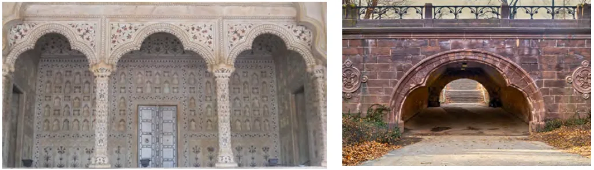
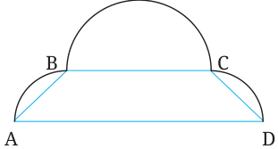
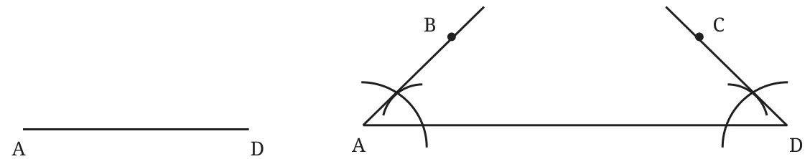
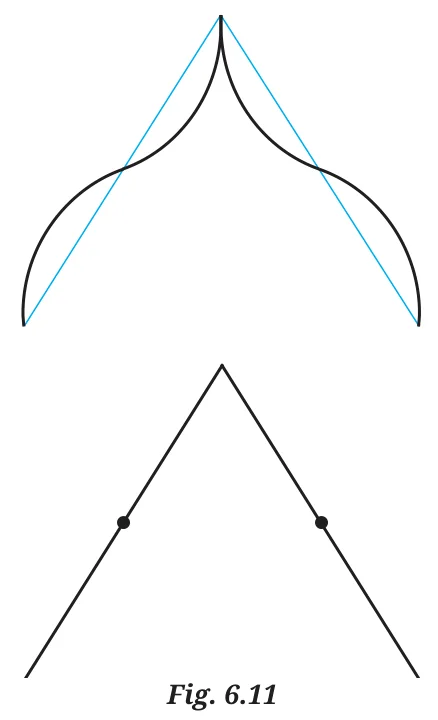

Trefoil Arch
Have you seen this kind of beautiful arch?

https://commons.wikimedia.org/w/index.php?curid=28374748
Diwan-i-Aam, Red fort
https://commons.wikimedia.org/wiki/File:Central_Park_A.jpg
Central park, New York City
How did they make these arches?
The first step is to be able to draw them on a plane surface such as paper or stone.

Construct this arch shape on a piece of paper.
Let us think about the support lines this figure will need.
For symmetry, we should have \(AB = CD\), and \(\angle BAD = \angle CDA\). How would you construct these support lines?

Construct equal angles at A and D. Mark B and C such that \(AB = CD\).
Use these support lines to construct an arch. If required, adjust the radii of the arcs to make the arch look more aesthetically pleasing.
A Pointed Arch
Some arches look like this.
https://en.m.wikipedia.org/wiki/File:Diwan-i-Aam,_Red_Fort,_Delhi_-_2.jpg
Diwan-i-Aam, Red Fort
How do we construct this shape?
What supporting lines will you use to draw this arch?
Remember ‘Wavy Wave’ from the Grade 6 Textbook?
The supporting lines are just two line segments of equal length.

If their midpoints are marked, will you be able to construct a pointed arch?